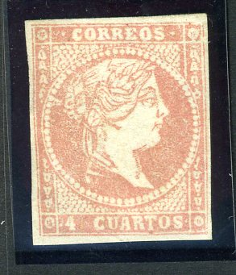

Return To Catalogue - Spain 1850-1853, Queen Isabella - Queen Isabella, 1860-1865 - Queen Isabella 1866-1870 - Spain - Spain cancels on first issues
Note: on my website many of the
pictures can not be seen! They are of course present in the
catalogue;
contact me if you want to purchase it.


2 Cuartos green 4 Cuartos red 1 Rl blue 2 Rs lilac
For the specialist: these stamps were first issued in 1855 on bluish paper with watermark 'loops'. Then in 1856 this watermark was changed to 'crossing lines' printed on a greyish tinted paper. Finally in 1856 these stamps were issued on unwatermarked white paper. The 4 Cs and the 2 Rs are the most common stamps of this serie.
Some printing errors occur in these stamps, missing dots behind "CUARTOS" or "CORREOS" or inscriptions "CORRFOS", "CORRLOS", "CORRIOS", "CORRECS", "C ARTOS" and "PEALES" (I have never seen any of these misprints myself).
Value of the stamps |
|||
vc = very common c = common * = not so common ** = uncommon |
*** = very uncommon R = rare RR = very rare RRR = extremely rare |
||
| Value | Unused | Used | Remarks |
| Watermark 'Loops' | |||
| 2 c | RR | R | |
| 4 c | RR | * | |
| 1 r | RR | *** | |
| 2 r | RR | *** | |
| Watermark 'Crossing lines' | |||
| 2 c | RRR | RR | |
| 4 c | * | * | |
| 1 r | RRR | RR | |
| 2 r | R | *** | |
| No Watermark | |||
| 2 c | RR | *** | |
| 4 c | * | * | |
| 12 c | RRR | -- | Non issued (see comment) |
| 1 r | *** | *** | |
| 2 r | *** | *** | |
Typical cancels:

A 12 c orange was prepared (with no watermark), but never put into use, here an image of this stamp with bar cancellation (to be sold to stamp dealers), and a forgery of this stamp:


Spanish Antilles stamp (left) and Philippines stamp (right)
For issues in similar types, see Spanish Antilles and Philippines.
Postal forgeries


(Postal forgery no 4)
Seven different postal forgeries are known, this is the fourth postal forgery described in the book 'Postal Forgeries of the World' by H.G. Leslie Fletcher. The background of pearls is different from the genuine stamps. There is no dot behind the "4". The nose of the Queen is very badly done and the "A" of "CUARTOS" is slanting towards the left.

This might be the 5th postal forgery described in Fletcher's
book. This one was used in Lerida.


(Postal forgery no 6)
The above postal forgery is also described in 'Postal Forgeries of the World' by H.G. Leslie Fletcher (sixth forgery). There is a small white spot in the right lower part of the "O" of "CUARTOS". The "C" of "CORREOS" has no lower serif, the "ORR" of this word seem to be larger and higher than the "EOS". The lower left corner rozette only has three white dots. I have seen this forgery with numeral cancel '1' of Madrid (see picture above). Apparently, according to Graus, this forgery was obtained by stealing a printing plate. It was used in many places in Spain.

I think this is the 7th postal forgery described in Fletcher's
book. It has an inverted "S" in "CUARTOS" and
the "R" of this word is slanting backwards. The word
"CORREOS" is in smaller letters.


Other postal forgery. The lower left pearls are different.
Apparently a similar postal forgery exists with a different
"S" of "CUARTOS".


Note the strange shape of the 'S's in these postal forgeries of
the 4 c value. These forgeries even have watermark.


Other postal forgeries
Philatelic forgeries:
Note that the size of "REAL (ES)" is much larger than in the genuine stamps in the above forgeries.
A 12 c orange was prepared (with no watermark), here an image a forgery of this stamp:
And a Segui forgery of this stamp:

Segui forgery

Sperati forgery of the 12 c unissued stamp.
Some very primitive blur philatelic forgeries, apparently all made by the same forger:


{kind=link}
{kind=link}
{kind=link}